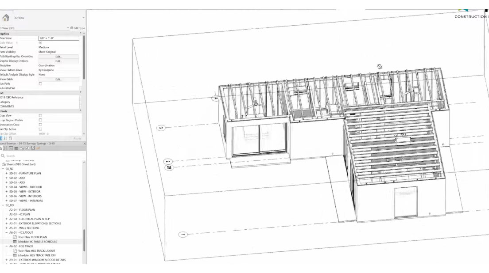

Six phases, one coordinated process.
This is the same process our owners, architects, and builders follow on every project, from first fire rebuilds in Altadena to new builds across the state, delivered end-to-end through our Integrated Delivery model.

Design
Every project starts with a design, not with our system. Bring us architectural drawings at any stage, from an early concept sketch to a fully permitted set, and we work from what you already have. No design style, unit mix, or construction type is off-limits, and there's no requirement to redesign around a proprietary system.
This is the one phase in the process that's entirely custom to your project. See how the rest runs on a proven, repeatable engine in the process breakdown below.

Coordination
We coordinate with your full project team, city, engineers, and suppliers to turn a building design into a buildable, permit-ready, certified scope. This single phase covers everything between design and manufacturing:
- Configuration, converting your design into defined components and specifications: wall assemblies, framing members, insulation, sheathing, and exact quantities.
- Digital model, a single coordinated model tying design intent to every component, so nothing drifts between what's designed and what's built.
- Permit documentation, generated directly from that same digital model rather than a separate, disconnected drawing effort.
- Certification & support, engineering certification and technical documentation under our ICC-ES listed 4C SAFE® and 4C ECO™ systems, plus ongoing project support through manufacturing, delivery, and installation.

Manufacturing
Components are manufactured at our Hayward, CA facility to your project's exact specifications, under either our 4C SAFE® or 4C ECO™ system depending on your configuration, with precision factory production and modern MRP for predictable output and less waste.
Every component is labeled for its installation sequence before it ever leaves the facility. See what we manufacture in more detail below.

Delivery
Pre-labeled components are packaged, protected, and delivered directly to your job site, sequenced for installation. There's no staging yard and no guesswork about what arrives when: every delivery is coordinated against your installation schedule.

Installation
Our licensed installation team manages this phase directly, coordinated with factory production and delivery, following the same labeled sequence and requiring no heavy equipment.
Either way, onsite construction time is cut by up to 30% versus conventional stick-framing.
Warranty
Every project is backed by our warranty on the complete installed system, since our own licensed team handles installation from start to finish, with our technical staff available for ongoing support.